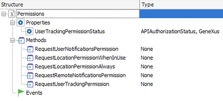

Permissions external object for Apple aplications
The Permissions external object allows you to request runtime permission on Apple applications.
 |
 |
Properties
UserTrackingPermissionStatus property
The tracking authorization status that is current for the application.
Returns a value of the APIAuthorizationStatus domain depending on the authorization status of the AppTrackingTransparency setting.
This property is available as from GeneXus 17 upgrade 3.
Methods
Any method can receive any parameter and does not return any information. Their only purpose is to request permissions from users.
RequestUserNotificationsPermission method
Requests permission to alert the user. Typically, you make this request if your app uses local or push notifications to alert the user regarding new information involving your app.
| Return value | None |
| Parameters | None |
RequestLocationPermissionWhenInUse method
Requests permission to use location services while the app is in the foreground.
| Return value | None |
| Parameters | None |
RequestLocationPermissionAlways method
Requests permission to use location services whenever the app is running.
| Return value | None |
| Parameters | None |
RequestRemoteNotificationsPermission method
Request permission to use remote notifications.
| Return value | None |
| Parameters | None |
RequestUserTrackingPermission method
Request permission to the user to collect tracking information.
See AppTrackingTransparency in iOS for more information.
This methods is available as from GeneXus 17 upgrade 3.
Events
It does not have any.
Scope
| Generators: | Apple |
See also
Purpose Strings properties group